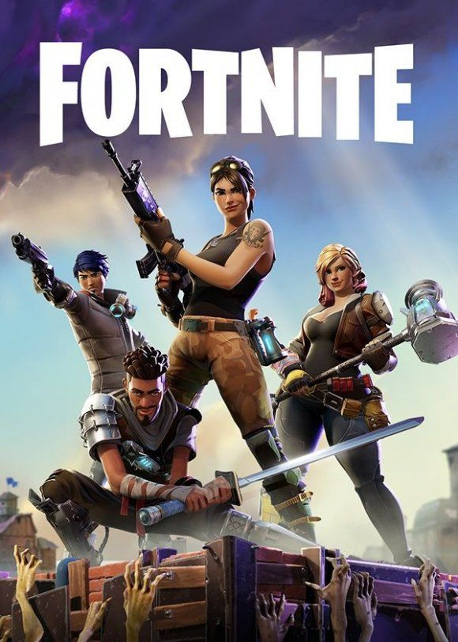
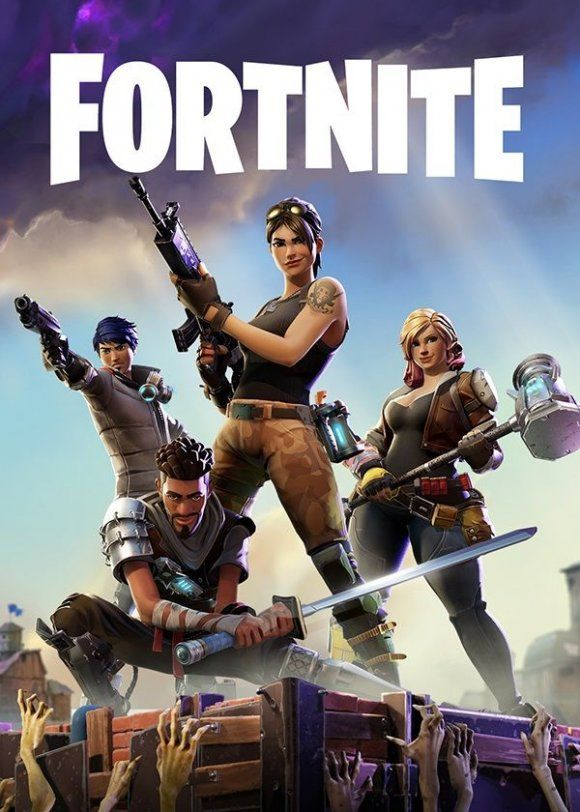
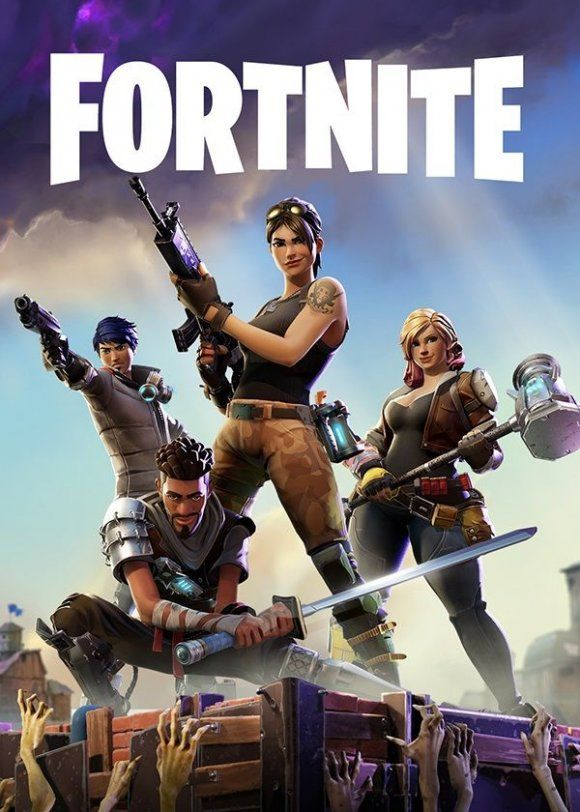
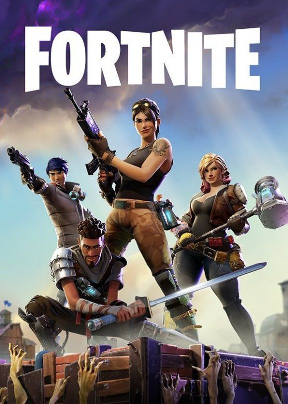

1. Call of Duty: Modern Warfare II Un juego de disparos en primera persona con una historia intensa y realista. Controlás a soldados en distintas misiones por el mundo. Su modo multijugador es muy popular y competitivo.
2. Minecraft: Un juego de bloques donde podés construir lo que quieras, explorar cuevas, sobrevivir a monstruos o jugar en modo creativo. Es ideal para usar la imaginación y jugar en grupo.
3. Grand Theft Auto V (GTA V): Un juego de mundo abierto donde controlás a tres personajes criminales en una ciudad llena de acción. Podés hacer misiones, manejar, volar, y jugar online con otros.
4. Fortnite: Un juego gratuito donde 100 jugadores luchan hasta que quede uno solo. Tiene gráficos coloridos, podés construir estructuras y participar en eventos y conciertos virtuales.
5. Forza Horizon 5: Un juego de autos ambientado en México. Podés correr en distintas pistas, explorar caminos, coleccionar autos y competir online. Es muy realista y visualmente impresionante.